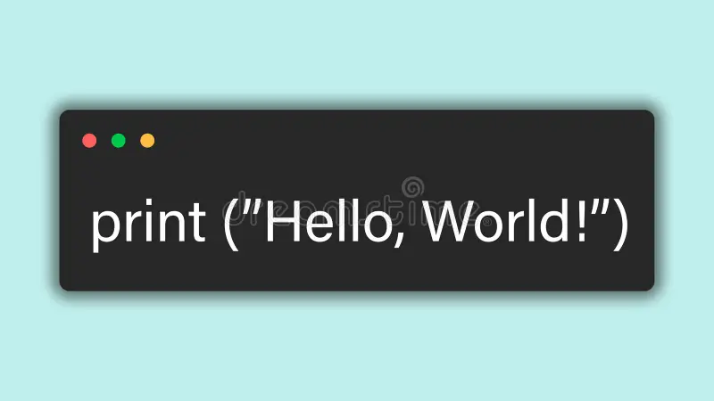
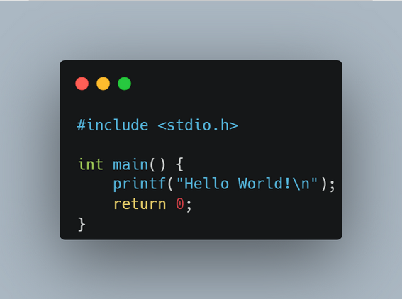

- Один из самых простых это Python 
- Дальше идет JS, без него ни как в веб
- И на последок С древний но все равно актуальный для изучения 

Самое первое нету лучшего или хутчего языка програмирования, все они разные, и для разных задач
История языков программирования началась ещё в XIX веке, когда Ада Лавлейс создала первые алгоритмы для аналитической машины Чарльза Бэббиджа. Это считается первой программой в мире. В 1940–1950-х годах появились первые настоящие языки для компьютеров. Они были очень сложными и писались с помощью машинных команд — наборов нулей и единиц. Чтобы облегчить работу программистов, вскоре создали ассемблер, который позволил использовать короткие текстовые команды вместо бинарного кода. В 1957 году появился FORTRAN, первый высокоуровневый язык, сделанный для инженерных и научных задач. Следом вышли COBOL, LISP, BASIC и другие — каждый для своих целей. В 1970–1980-х годах появились языки, которые стали основой современных технологий:
Сегодня существует сотни языков, каждый из которых решает свои задачи — от создания игр (C++, C#) до разработки сайтов (JavaScript, Python, PHP) и анализа данных (Python, R). Эволюция продолжается, и новые языки появляются, чтобы сделать код проще, быстрее и безопаснее.